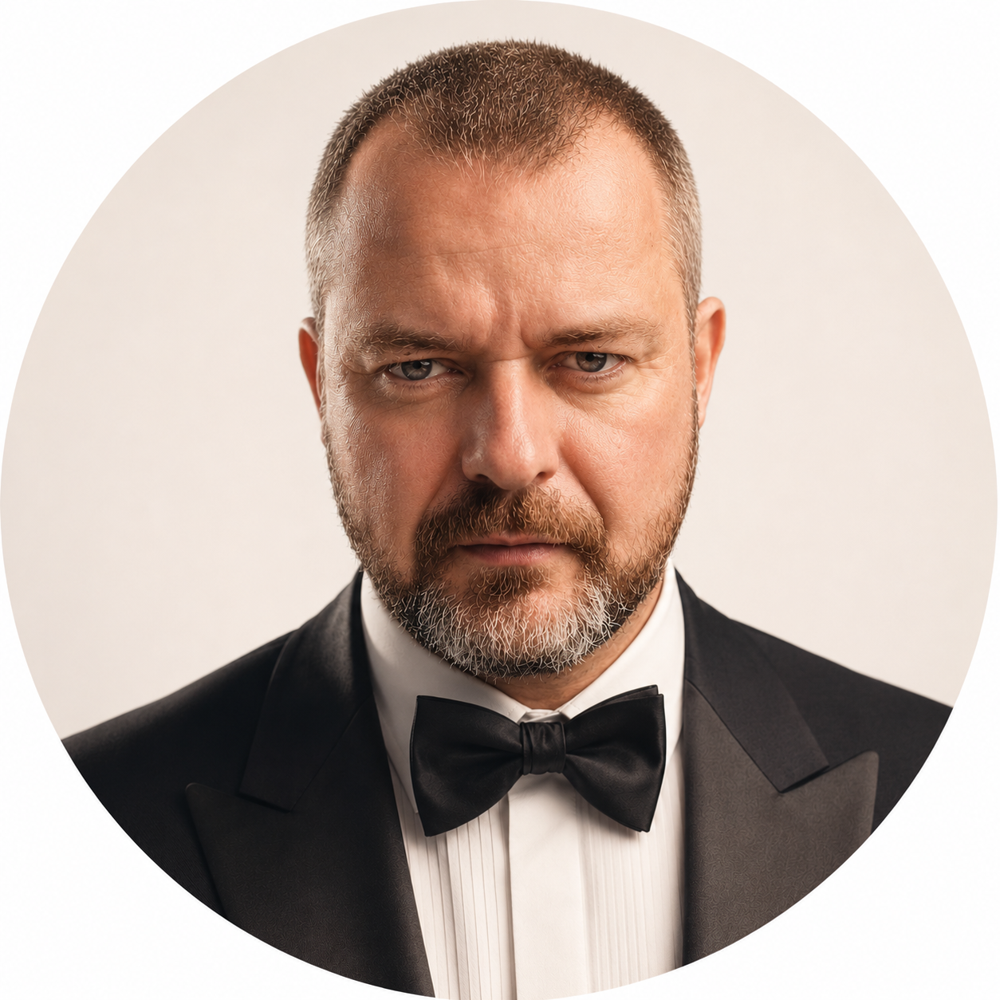

Volné kapacity · Q3 onboarding
Fractional Head of AI: externí AI leadership, který převede AI z experimentů na řízený výsledek.
Pro vedení firem 50–500+ lidí, které chtějí AI roadmapu, governance a první měřitelné use-cases — bez full-time AI executive hire.
- Prioritizovaná AI roadmapa místo náhodných experimentů
- Governance a bezpečná pravidla používání AI
- 2–3 nasazené use-cases během prvních 90 dnů
- Board-ready reporting: co běží, co šetří, co dál
- Nezávislý pohled na nástroje a dodavatele
Vendor-neutral · Board-ready · Execution-first
Fractional Head of AI je externí AI leadership role, která pomáhá vedení firem o 50–500+ lidech převést AI z náhodných experimentů na řízenou roadmapu, governance a měřitelné business výsledky — formou 90denního mandátu nebo průběžné spolupráce na část úvazku.
V České republice tuto roli poskytuje David Veselý (Vesely.ai s.r.o.) pod značkou headofai.cz.
Nepotřebujete další AI nástroj. Potřebujete vlastníka AI směru.
Ve většině firem AI nevázne na technologii. Vázne na prioritizaci, odpovědnosti, governance a schopnosti převést možnosti AI do konkrétního provozního výsledku.
- AI iniciativy vznikají nahodile v odděleních — bez vlastníka a bez priorit
- Nikdo nemá celkový přehled nad riziky, náklady a dopadem
- Dodavatelé tlačí vlastní řešení, ale neřídí celou architekturu
- Board chce výsledek, ne další experiment
- IT nechce další chaos ve stacku
- Lidé používají AI bez jasných pravidel — citlivá data tečou ven
Co to stojí: měsíce ztraceného času, duplicitní licence, nevyužité příležitosti k automatizaci a rostoucí compliance riziko. A board mezitím ztrácí trpělivost.
Co se ve firmě reálně změní
- AI má jasného vlastníka, priority a rozpočet — chaos končí
- Vedení rozhoduje na základě dat, ne dojmů z LinkedInu
- První use-cases prokazatelně šetří hodiny práce každý týden
- Zaměstnanci používají AI bezpečně a podle pravidel
- Dodavatelé jsou řízeni, ne naopak
- Board dostává srozumitelný reporting: co běží, co to nese, co je další krok
Co konkrétně dostanete po 90 dnech
AI Opportunity Map
Use-cases zmapované podle dopadu, náročnosti a rizika napříč celou firmou.
→ víte, kde AI vydělá nejvícPrioritized Roadmap
Co dělat teď, co později a co nedělat vůbec — s odpovědnostmi a termíny.
→ konec nahodilých experimentůGovernance Rules
Pravidla pro data, role, odpovědnost a bezpečné používání AI v celé firmě.
→ nižší riziko, klidné IT i právníkFirst Deployed Use-Cases
2–3 funkční workflow, automatizace nebo agentic procesy v reálném provozu.
→ měřitelná úspora od prvních týdnůInternal AI Champions
Lidé uvnitř firmy, kteří umí AI prakticky zavádět ve svých týmech.
→ adopce nezávislá na externistoviBoard Reporting
Pravidelný přehled: co běží, co šetří/vydělává a co je další krok.
→ vedení má AI pod kontrolouKdy dává Fractional AI leadership smysl
Mandát dává největší smysl ve chvíli, kdy firma už chápe, že AI je strategické téma, ale zatím nechce nebo nepotřebuje full-time AI executive roli.
Jste fit, pokud
- máte 50–500+ lidí
- AI už řešíte, ale nemá jasného vlastníka
- chcete roadmapu, governance a první use-cases
- potřebujete board-ready komunikaci
- chcete nezávislý pohled na nástroje a dodavatele
Nejste fit, pokud
- hledáte jen levného dodavatele chatbotu
- chcete jednorázový workshop bez exekuce
- nemáte podporu vedení
- nechcete měřit dopad
- chcete AI jako PR dekoraci
Kde typicky vzniká první hodnota
Sales & lead generation
Lepší kvalifikace poptávek, rychlejší reakce a automatizace follow-upu.
→ méně ztracených leadůCustomer support / concierge
Rutinní dotazy a požadavky řešené rychleji a konzistentněji, s eskalací na člověka.
→ kratší doba odezvyInterní znalostní asistenti
Rychlejší přístup k interním znalostem, dokumentům a procesům.
→ méně dotazů „kde to najdu"Dokumentové workflow
Zpracování, třídění, sumarizace a kontrola dokumentů.
→ hodiny administrativy pryčHR onboarding
Rychlejší zapracování lidí a lepší dostupnost interních informací.
→ nový člověk produktivní dřívManagement reporting
Přehlednější reporting pro vedení bez ručního skládání podkladů.
→ rozhodování na datechOperations automation
Automatizace opakujících se provozních kroků napříč týmy.
→ stejný tým zvládne vícFinance & admin workflow
Méně ruční administrativy a lepší kontrola rutinních procesů.
→ méně chyb, rychlejší uzávěrkyAI governance layer
Pravidla, odpovědnosti a bezpečný rámec pro používání AI.
→ compliance bez brzděníExecutive decision support
Lepší příprava podkladů pro rozhodování vedení.
→ rychlejší a kvalitnější rozhodnutíAgentic process automation
AI workflow, která propojují nástroje, data a konkrétní provozní výsledek.
→ end-to-end procesy bez ruční práceJak pracuji — 7 kroků
Diagnose
AI maturity, procesy, data, nástroje, rizika.
Prioritize
Výběr use-cases s nejvyšším business dopadem.
Architect
Návrh workflow, odpovědností a integrací.
Build
Piloty, automations, agents, interní nástroje.
Govern
Pravidla, bezpečnost, auditovatelnost, schvalování.
Train
Board, management, týmy, interní champions.
Scale
Měření, iterace, rollout, další use-cases.
Jak řešit AI leadership: čtyři cesty
| Kritérium | Full-time Head of AI | AI agentura / vendor | Strategický konzultant | Fractional Head of AI |
|---|---|---|---|---|
| Náklady | 200–400 tis. Kč/měs. + nábor 6+ měsíců | Projektově, často s vendor lock-inem | Vysoká denní sazba, bez exekuce | Zlomek full-time nákladu, start do týdnů |
| Exekuce | Ano, po zapracování | Jen ve vlastním stacku | Slidy, ne nasazení | Strategie + reálné nasazení use-cases |
| Nezávislost na dodavatelích | Ano | Ne — prodává vlastní řešení | Většinou ano | Vendor-neutral, doporučí nejlepší fit |
| Board komunikace | Závisí na osobě | Minimální | Silná, ale obecná | Board-ready reporting jako standard |
| Riziko | Špatný hire = drahá chyba | Lock-in, závislost | Doporučení bez odpovědnosti za výsledek | 90denní mandát s definovanými výstupy |
Jak vypadá výstup v praxi
Každé tvrzení na této stránce má za sebou konkrétní artefakt. Toto jsou tři z nich.
AI Opportunity Map
Matice use-cases podle business dopadu a náročnosti. Vedení na jedné stránce vidí, kam investovat první korunu — a co s klidem odložit.
Governance one-pager
Pravidla práce s AI, klasifikace dat a schvalovací matice — dokument, který reálně podepíše vedení a pochopí každý zaměstnanec.
Board report
Měsíční jednostránkový přehled: běžící use-cases, uspořené hodiny, náklady, rizika a další krok. Žádné slidy o „potenciálu AI".
Co říká vedení firem po mandátu
Reference jsou kvůli NDA anonymizované na úroveň role a oboru. Čísla úspor a ROI odpovídají reálným výstupům mandátů.
„Za 90 dní jsme měli kompletní Opportunity Map, schválené governance a tři live use-cases. Poprvé máme AI pod kontrolou a board dostává reálná čísla místo buzzwordů."
„Nejlepší investice do AI, jakou jsme udělali. Governance one-pager podepsal board během jednoho meetingu a během prvního měsíce jsme ušetřili přes 420 hodin administrativy v dokumentech a reportingu."
„Místo dalšího experimentování máme teď jasnou prioritizaci a fungujícího interního znalostního asistenta. David dokázal propojit business potřeby s praktickou exekucí — přesně to, co jsme potřebovali."
„Governance pravidla konečně uklidnila jak IT, tak právní oddělení. Zároveň jsme během sprintu nasadili automatizaci leadů a supportu — viditelný dopad na konverze už v Q1."
„Board reporty teď vypadají úplně jinak. Žádné slidy o potenciálu — jen konkrétní use-cases, ušetřené hodiny a další krok. Doporučuji každému vedení, které chce AI brát vážně."
„Z 90denního sprintu jsme přešli na retainer. AI už není náklad, ale měřitelná páka. První rok odhadujeme úsporu přes 1,8 milionu korun v administrativě a rychlejších procesech."

Kdo za tím stojí — David Veselý
Jsem David Veselý, zakladatel Vesely.ai s.r.o. Pomáhám vedení firem převést AI z náhodných experimentů na řízený operating model: roadmapa, governance, první use-cases a měřitelný dopad.
- AI leadership pro board a management
- Strategie propojená s praktickou exekucí
- Vendor-neutral přístup
- Vlastní AI workforce platforma Vesely.ai jako exekuční kapacita, ne podmínka
Proč ne klasický konzultant nebo vendor? Mám vlastní AI platformu, takže rozumím nejen strategii, ale i praktickému stavění AI systémů. Zároveň nejsem uzamčený do jednoho dodavatele ani stacku — tam, kde dává smysl Microsoft, OpenAI, Anthropic, Make, interní vývoj nebo specializovaný dodavatel, doporučím ho. Mandát stojí na důvěře, ne na vendor lock-inu.
Dva způsoby spolupráce
90-Day AI Leadership Sprint
Rychlý mandát pro firmy, které chtějí získat kontrolu nad AI směrem a spustit první řízené use-cases.
- AI maturity snapshot
- Opportunity map
- Prioritizovaná roadmapa
- Governance draft
- 2–3 pilotní use-cases
- Board-ready report
Fixní cena za celý sprint — víte předem, kolik mandát stojí a co přesně dostanete.
Probrat sprintFractional AI Retainer
Průběžný mandát pro firmy, které chtějí seniorní AI leadership bez full-time hire.
- Měsíční leadership cadence
- Řízení AI roadmapy
- Kontrola dodavatelů
- Interní adopce a champions
- Governance a bezpečnost
- Reporting pro vedení
- Kontinuální implementace
Měsíční paušál podle rozsahu — typicky zlomek nákladu na full-time Head of AI.
Probrat retainerJak se tvoří cena: sprint má fixní cenu, retainer se odvíjí od počtu dnů měsíčně a rozsahu odpovědnosti. Konkrétní nabídku dostanete po AI Maturity Snapshotu — vždy s definovanými výstupy, ne s otevřenou fakturací hodin.
Jak spolupráce začíná
AI Leadership Call
30 minut. Rychlé ověření, zda má mandát smysl. Zdarma a bez závazku.
AI Maturity Snapshot
Zmapování současného stavu, rizik a příležitostí.
90-Day Proposal
Konkrétní cíle, výstupy, cadence a odpovědnosti — s fixní cenou.
Execution
Roadmapa, governance, piloty, reporting.
Časté otázky
Co je Fractional Head of AI?
Externí AI leadership role na část úvazku. Firma získá seniorní vedení AI agendy — roadmapu, governance, prioritizaci a exekuci — bez nákladů a rizika full-time executive hire.
Je to konzultace, nebo implementace?
Obojí. Strategie bez exekuce je divadlo. Implementace bez strategie je chaos. Mandát kombinuje leadership, prioritizaci, governance a praktické dodání prvních use-cases.
Nahrazujete našeho CIO nebo CTO?
Ne. Spolupracuji s nimi. Role je AI leadership: business prioritizace, governance, adopce, roadmapa a koordinace mezi vedením, IT a týmy.
Kolik to stojí?
90denní sprint má fixní cenu, retainer je měsíční paušál podle rozsahu — typicky zlomek nákladu na full-time Head of AI (200–400 tis. Kč měsíčně plus půl roku náboru). Konkrétní nabídku dostanete po úvodním callu a maturity snapshotu.
Jste vázaný na Vesely.ai?
Ne. Vesely.ai je moje vlastní AI workforce platforma a praktická exekuční kapacita. Není to ale podmínka spolupráce. Doporučuji vždy řešení, které dává nejlepší smysl pro konkrétní firmu.
Jak je to s bezpečností našich dat?
Spolupráce standardně běží pod NDA. Součástí governance je klasifikace dat a pravidla, jaká data smí do kterých AI nástrojů — to je často první výstup mandátu vůbec.
Kolik času to bude stát naše lidi?
Vedení typicky 2–3 hodiny měsíčně (cadence + report), vlastníci pilotních procesů pár hodin týdně v aktivní fázi. Mandát je navržený tak, aby firmu zatěžoval co nejméně.
Potřebujeme vlastní data tým?
Ne nutně. První fáze bývá často o procesní jasnosti, prioritizaci use-cases a bezpečném provozním rámci. Datová vrstva se řeší podle reálné potřeby.
Jak rychle uvidíme výsledek?
První konkrétní výstupy vznikají během prvních týdnů: maturity snapshot, opportunity map a prioritizace. Do 90 dnů má firma první řízené use-cases a board-ready reporting.
Co se stane po 90 dnech?
Tři možnosti: firma pokračuje sama (má roadmapu, governance i vyškolené champions), přejde na retainer pro průběžné vedení, nebo si objedná další sprint na nové use-cases. Žádný lock-in.
Pro koho to není?
Není to vhodné pro firmy, které hledají pouze levný chatbot, jednorázové školení bez exekuce nebo AI jako marketingový efekt bez ochoty měřit dopad.
Zjistěme, kde může AI vytvořit měřitelnou páku během 90 dnů.
30minutový AI Leadership Call. Zdarma, bez závazku — na konci budete vědět, jestli má mandát pro vaši firmu smysl.
Domluvit AI Leadership CallVolné kapacity · Q3 onboarding · Odpovídám do 24 hodin